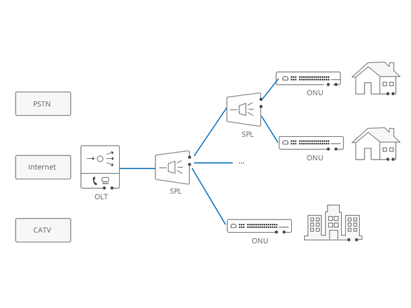
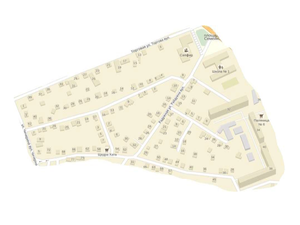
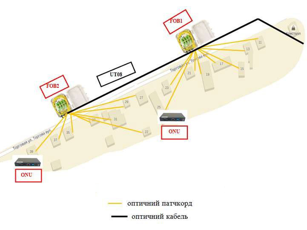
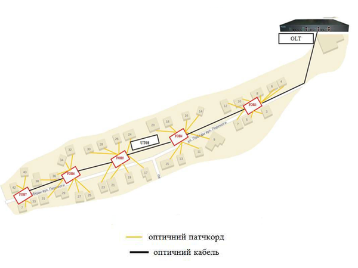
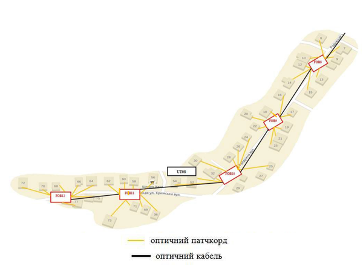
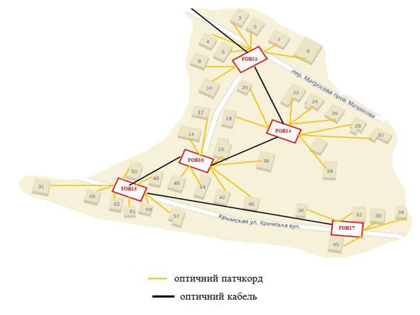

Дисципліна: Практика з комп'ютерних мереж та систем
Лекція 3. Створення мережі міста за технологією PON
Мета лекції: визначення та засвоєння на практиці специфіки побудови комп’ютерної мережі за технологією PON, формування навичок розрахунку оптичного бюджету та кросування обладнання.
План вивчення:
- Аналіз місцевості та загальні принципи проєктування мережі для приватного сектора.
- Довідкові дані: затухання на розгалужувачах PLC та FBT.
- Практичні розрахунки оптичного бюджету по гілках (волокнах) OLT.
Ключові терміни: проєкт мережі, оптичний бюджет, розрахунок загасання, каскадування дільників, оптична топологія.
1. Переваги технології GEPON (Сучасний контекст)
Для побудови сучасної мережі міста однією з найбільш економічно вигідних є технологія GEPON (Gigabit Ethernet Passive Optical Network). Виділимо основні переваги її використання як з точки зору класичної теорії, так і з позицій сучасного інженерного досвіду:
- Низькі витрати на експлуатацію (OPEX — Operating Expenses): Завдяки відсутності активного (електричного) обладнання на проміжних вузлах мережі, значно скорочуються витрати на обслуговування, оренду місця та живлення.
- Можливість поступового масштабування: Мережа дозволяє додавати нових абонентів (нові вузли) до вільного порту дільника без переривання роботи та перекомпіляції вже створеної інфраструктури.
- Економія оптичного кабелю: Побудова мережі цілого населеного пункту (приватного сектора) може бути реалізована на базі всього лише одного оптичного волокна (магістральної жили) за рахунок деревоподібної або шинної топології дільників.
- Багатофункціональність (Multi-Play): Класично PON дозволяє абонентам отримувати не тільки високошвидкісний доступ до Інтернету, а й цифрове телебачення (IPTV / КТБ — Кабельне ТБ), VoIP-телефонію (Voice over IP) та послуги телеметрії через один оптичний кабель.
- Висока надійність: Менша кількість активних ланок гарантує нижчу ймовірність збоїв через стрибки напруги чи перегрів обладнання у вуличних умовах.
⚡ Тренд на енергонезалежність (Блекаути)
В умовах українських реалій та постійних загроз енергетичній інфраструктурі, PON-мережі стали критично важливою технологією для населення. Оскільки від провайдера (який має батареї та генератори в центрі вузла зв'язку) і до будинку клієнта знаходяться виключно пасивні оптичні дільники, які взагалі не потребують електроенергії (на відміну від свічів у технології FTTB), лінія залишається "світлою". Абоненту достатньо лише заживити абонентський термінал (ONU) та свій Wi-Fi роутер від звичайного павербанка за допомогою Power-кабелю DC (9V/12V), щоб мати стабільний гігабітний інтернет під час тривалих блекаутів.
🚀 Еволюція стандартів: від GEPON до XGS-PON
У цій лекції для вивчення базових принципів оптичного бюджету ми спираємось на класику — стандарти GEPON (1 Гбіт/с). Однак фактичним монополістом підключень зараз є GPON (Gigabit PON, асиметрична швидкість 2.5 Гбіт/с / 1.25 Гбіт/с). Крім того, сучасні провайдери інтенсивно модернізують лінії на стандарт 10G-PON (XGS-PON). Це дозволяє ефективніше боротися з "перенасиченням" перевантажених гілок та надавати чесні мультигігабітні тарифи.
📡 Сучасні абонентські термінали (ONU)
Історично абонентські термінали виконували роль виключно медіаконвертера з оптики на мідний інтерфейс RJ-45, після якого абонент був змушений ставити додатково свій розгалужувач — Wi-Fi роутер. Сучасні ONU представляють собою гібридні All-in-One маршрутизатори (Dual-Band Gateway), які об'єднують функції оптичного клієнта і потужного дводіапазонного роутера з підтримкою Wi-Fi 6 (802.11ax). Це зменшує "зоопарк" обладнання в квартирі.
2. Аналіз місцевості та підготовка до проєктування мережі
При проєктуванні міських мереж ділянки з багатоповерховими забудовами традиційно обслуговуються технологіями FTTB/FTTH (Fiber to the Building / Fiber to the Home — оптика до будівлі / до квартири). На противагу цьому, для об'єднання в мережу одноповерхових будинків (приватного сектора) найбільш уживаною і фінансово ефективною є технологія PON.
У подальших дослідженнях щодо проєктування оптичних мереж міста ми будемо використовувати технологію GEPON. Розглянемо специфіку побудови мережі за даною технологією на прикладі простої схеми (рис. 3.1).

Рис. 3.1. Схема мережі за технологією PON
Перейдемо безпосередньо до нашого завдання. Розглянемо розроблену карту-схему.

Рис. 3.2. Карта-схема реального міста для проєктування уявної мережі PON
Виконаємо спочатку аналіз місцевості. Відповідно до рис. 3.2 на заданій території знаходяться багатоповерхові будинки (умовно виділені червоними колами або квадратами), а всі інші будівлі відносяться до приватного сектору і є переважно одноповерховими. Ландшафт знаходиться на рівнині, характеризується незначною кількістю рослин (переважно дерева, насаджені вздовж вулиць Торгової, Перемоги, Райдужної, Світлодарської та в приватному секторі). Уздовж кожної вулиці розташовано стовпи ліній електропередач. Цю характеристику ми будемо використовувати для прокладання підвісного оптичного кабелю по стовпах (топологія мережі).
3. Оптичний бюджет та базові таблиці затухань
При проєктуванні пасивної оптичної мережі головним завданням інженера є контроль оптичного бюджету (Loss Budget) — сумарних втрат світла на шляху від OLT до ONU. Для забезпечення стабільного зв'язку сигнал на вході абонентського ONU має бути в межах від -8 дБм до -26 дБм (не нижче допустимої чутливості приймача).
У нашому проєкті ми виходимо з того, що сигнал на виході OLT становить +2 дБм (потужність передавача SFP-модуля).
Розрахунок теоретичного бюджету базується на сумуванні ідеалізованих затухань на дільниках, але в реальному житті (під час монтажу та багаторічної експлуатації) на сигнал впливає величезна кількість фізичних перешкод:
⚠️ Реальні фактори затухання в оптичній магістралі
Реальна інженерія PON завжди закладає так званий запас на експлуатацію (System Margin) близько 3 дБ через такі приховані процеси:
- Макро- та мікровигини (Macrobending): Оптоволокно дуже чутливе до перегинів. Якщо монтажник заломить кабель або намотає його з меншим за допустимий радіусом (менше 3-5 см для SMF), кут світла змінюється, і частина випромінювання "вилітає" за межі серцевини в оболонку. Це може миттєво додати -2..-5 дБ втрат або взагалі обірвати зв'язок.
- Забруднення контактів (Dirt & Fat): Навіть мікроскопічна порошинка або відбиток пальця (жир) на торці оптичного конектора SC/UPC можуть працювати як "дзеркало" або лінза-розсіювач. Брудний роз'єм з легкістю додає до -3 дБ затухання через зворотне відображення, саме тому перед з'єднанням конектори протирають безворсовими серветками зі спеціальним спиртом. У нормі чисте механічне з'єднання вносить не більше 0,5 дБ.
- Зварювальні шви (Splices): Скло сплавляють вольфрамовими електродами у зварювальному апараті. Навіть ідеальна зварка (захищена гільзою КДЗС) залишає мікронеоднорідність. Кожна зварка вносить приблизно 0,02 - 0,05 дБ.
- Старіння скла та "Водяні піки" (Fiber Aging & Water Peaks): З роками молекули скла структурно "втомлюються" і поступово дифузують мікровологу з оболонки чи середовища (утворення іонів гідроксильної групи OH-). Це явище так званого "водяного піка" починає інтенсивніше поглинати світло. Базове затухання нового кабелю становить близько 0,36 дБ на 1 км (на хвилі 1310 нм), але з роками цей показник зростає, зменшуючи життєвий цикл лінії.
Для спрощення поточних теоретичних розрахунків у цій лекції (завдяки малим відстаням між вузлами в межах 1 км) ми будемо враховувати лише втрати на дільниках PLC/FBT та втрати на механічних з'єднаннях (постачання клієнта). Втрати відстані на кабелі та зварки будуть ігноруватися, однак вони є обов'язковими в реальному проєктуванні!
Для розрахунків будемо керуватися значеннями з наведених нижче таблиць.
Таблиця 3.1. Усереднені затухання сигналу на виходах зі зварних дільників FBT
| Дільник X/Y |
Затухання X (менша частина), дБ |
Затухання Y (більша частина), дБ |
|---|---|---|
| FBT 5/95 | 13,7 | 0,32 |
| FBT 10/90 | 10,08 | 0,49 |
| FBT 15/85 | 8,16 | 0,76 |
| FBT 20/80 | 7,11 | 1,06 |
| FBT 25/75 | 6,29 | 1,42 |
| FBT 30/70 | 5,39 | 1,56 |
| FBT 35/65 | 4,56 | 1,93 |
| FBT 40/60 | 4,01 | 2,34 |
| FBT 45/55 | 3,73 | 2,71 |
| FBT 50/50 | 3,17 | 3,19 |
Таблиця 3.2. Усереднені затухання сигналу на планарних дільниках PLC
| Дільник PLC 1xN |
Затухання на кожному виході, дБ |
|---|---|
| PLC 1x2 | 4,3 |
| PLC 1x4 | 7,4 |
| PLC 1x8 | 10,7 |
| PLC 1x16 | 13,9 |
| PLC 1x32 | 17,2 |
| PLC 1x64 | 21,5 |
🔬 Фізика дільників: Як світло ділиться без струму?
Основою пасивних мереж (PON) є оптичні сплітери (дільники), які розгалужують промінь світла на багатьох абонентів. Розподіл відбувається на рівні чистої фізики та оптики за двома фундаментальними технологіями:
- FBT (Fused Biconical Taper — сплавні/зварні дільники): Класична технологія. Два оптичних волокна зачищають від оболонки, скручують, нагрівають лазером до плавлення і розтягують. У місці звуження (зварки) порушується кут повного внутрішнього відбиття, і частина світла "перетікає" в сусіднє волокно. Унікальна перевага: можливість створювати несиметричні відсотки (наприклад, 20/80 або 5/95), що дозволяє відщіпувати краплю світла ближньому абоненту, а основну потужність пускати трасою далі.
- PLC (Planar Lightwave Circuit — планарні дільники): Високотехнологічна літографія на кремнієвому чипі (схоже на виробництво процесорів ПК). На підкладці витравлюється мікроскопічний хвилевод, який симетрично роздвоюється (як гілки дерева). Фокус технології: ідеально рівномірне ділення світла широким спектром на велику кількість виходів (1x8, 1x32, 1x64) в ультракомпактному корпусі.
4. Практичні розрахунки оптичного бюджету (Створення мережі)
Загальна кількість потенційних абонентів: 132. Для забезпечення такої кількості абонентів ми використаємо 4 оптичні волокна (корені дерева). Кожне волокно буде обслуговувати певний географічний сектор (вулицю).
3.1. ВОЛОКНО 1: вул. Торгова (16 абонентів, FOB1 – FOB2)
Для підключення абонентів по вул. Торгова (16 аб.) та вул. Перемоги (36 аб.) ми використаємо одне оптичне волокно від OLT, яке знаходиться географічно близько. Сигнал з OLT (+2 дБ) ми розділимо за допомогою зварного розгалужувача FBT 30/70. Розподіл потужності обґрунтовано кількістю абонентів: Торгова з 16 абонентами отримає 30% сигналу (відвід), а Перемоги з 36 абонентами — 70% транзиту.
Відповідно до таблиці 3.1, маємо такі вхідні сигнали на вулиці: - На вул. Торгову піде: 2 - 5,39 = -3,39 дБ. - На вул. Перемоги транзитом: 2 - 1,56 = 0,44 дБ.
Завдання по вул. Торговій — розподілити -3,39 дБ сигналу між 16 абонентами. Тобто створити два бокси FOB з планарними дільниками PLC 1x8 у кожному. Для подальшого проходу волокна від FOB1 до FOB2 використаємо дільник FBT 50/50 (порівну на поточний і наступний вузол).

Рис. 3.3. Карта вул. Торгова
+2 дБ")):::olt ---|Волокно 1| FBTMAIN{"FBT
30(X)/70(Y)"}:::fbt FBTMAIN ---|X: -3,39| FOB1[FOB 1] FBTMAIN ---|Y: +0,44| VOL2(("На вул.
Перемоги")):::tran subgraph sg1 ["Оптична Шина - вул. Торгова"] direction LR FOB1 --- FBT1{"FBT
50(X)/50(Y)"}:::fbt FBT1 ---|Y: -6,58| FOB2[FOB 2] FOB2 --- PLC2["PLC
1x8"]:::plc --- ONU2[8 ONU]:::onu FBT1 ---|X: -6,56| PLC1["PLC
1x8"]:::plc --- ONU1[8 ONU]:::onu end
Рис. 3.4. Оптична Шина — вул. Торгова
Таблиця 3.3. Розрахунок оптичного бюджету (Волокно 1 – вул. Торгова)
| Вузол | Входи (IN) | Сплітери (FBT) | Виходи (OUT) | Абоненти (PLC) | На ONU |
|---|---|---|---|---|---|
| FOB 1 | Від OLT: ● -3,39 дБ |
◆ FBT 50/50 (X -3,17 / Y -3,19) |
Відвід X (на PLC): ● -6,56 дБ Транзит Y: ● -6,58 дБ |
■ PLC 1x8 (-10,7) Порти 1-8: -17,26 дБ |
■ -17,76 дБ (-0,5 кон.) |
| ● -3,39 − ◆ X (3,17) = ● -6,56 дБ | ● -3,39 − ◆ Y (3,19) = ● -6,58 дБ | ||||
| ● -6,56 − ■ PLC 1x8 (10,7) = -17,26 дБ | ■ -17,26 − конектор 0,5 = ■ -17,76 дБ | ||||
| FOB 2 | Від FOB 1: ● -6,58 дБ |
Відсутній (кінцева муфта) | Відвід X (на PLC): ● -6,58 дБ Транзит Y: немає |
■ PLC 1x8 (-10,7) Порти 1-8: -17,28 дБ |
■ -17,78 дБ (-0,5 кон.) |
| ● Вхід -6,58 → напряму на PLC (без FBT) | ● На PLC: -6,58 дБ | ||||
| ● -6,58 − ■ PLC 1x8 (10,7) = -17,28 дБ | ■ -17,28 − конектор 0,5 = ■ -17,78 дБ | ||||
3.2. ВОЛОКНО 2: вул. Перемоги (36 абонентів, FOB3 – FOB7)
Вулиця Перемоги має видовжену географію (лінійне поселення), тому ми будуємо на ній класичну топологію "Шина" з використанням каскадування зварних FBT дільників у кожному оптичному боксі, відщипуючи необхідну частку сигналу і передаючи велику потужність далі в лінію.
Як ми розрахували раніше, загальний вхідний сигнал на цю гілку становить 0,44 дБ (після первинного FBT 30/70).
Оскільки абонентів 36, нам необхідно розмістити 4 сплітери PLC 1x8 (на 32 абоненти) та 1 сплітер PLC 1x4 (на 4 абоненти на кінці вулиці). В усіх вузлах до FOB7 ми застосовуємо відводи FBT 20/80 (20% на свій бокс для живлення PLC, 80% — транзитом для сусідів далі).

Рис. 3.5. Карта вул. Перемоги
+0,44")):::tran --- FOB3[FOB 3] subgraph Вулиця Перемоги [Оптична Шина - вул. Перемоги] direction LR FOB3 --- FBT3{"FBT
20(X)/80(Y)"}:::fbt FBT3 ---|Y: -0,62| FOB4[FOB 4] --- FBT4{"FBT
20(X)/80(Y)"}:::fbt FBT4 ---|Y: -1,68| FOB5[FOB 5] --- FBT5{"FBT
20(X)/80(Y)"}:::fbt FBT5 ---|Y: -2,74| FOB6[FOB 6] --- FBT6{"FBT
20(X)/80(Y)"}:::fbt FBT6 ---|Y: -3,80| FOB7[FOB 7] --- FBT7{"FBT
20(X)/80(Y)"}:::fbt FBT7 ---|Y: -4,86| OUT((Резерв)):::tran FBT3 ---|X: -6,67| PLC3["PLC
1x8"]:::plc --- ONU3[8 ONU]:::onu FBT4 ---|X: -7,73| PLC4["PLC
1x8"]:::plc --- ONU4[8 ONU]:::onu FBT5 ---|X: -8,79| PLC5["PLC
1x8"]:::plc --- ONU5[8 ONU]:::onu FBT6 ---|X: -9,85| PLC6["PLC
1x8"]:::plc --- ONU6[8 ONU]:::onu FBT7 ---|X: -10,91| PLC7["PLC
1x4"]:::plc --- ONU7[4 ONU]:::onu end
Рис. 3.6. Оптична Шина — вул. Перемоги
Таблиця 3.4. Розрахунок оптичного бюджету (Волокно 2 – вул. Перемоги)
| Вузол | Входи (IN) | Сплітери (FBT) | Виходи (OUT) | Абоненти (PLC) | На ONU |
|---|---|---|---|---|---|
| FOB 3 | Від OLT: ● 0,44 дБ |
◆ FBT 20/80 (X -7,11 / Y -1,06) |
Відвід X (на PLC): ● -6,67 дБ Транзит Y: ● -0,62 дБ |
■ PLC 1x8 (-10,7) Порти 1-8: -17,37 дБ |
■ -17,87 дБ (-0,5 кон.) |
| ● 0,44 − ◆ X (7,11) = ● -6,67 дБ | ● 0,44 − ◆ Y (1,06) = ● -0,62 дБ | ||||
| ● -6,67 − ■ PLC 1x8 (10,7) = -17,37 дБ | ■ -17,37 − конектор 0,5 = ■ -17,87 дБ | ||||
| FOB 4 | Від FOB 3: ● -0,62 дБ |
◆ FBT 20/80 (X -7,11 / Y -1,06) |
Відвід X (на PLC): ● -7,73 дБ Транзит Y: ● -1,68 дБ |
■ PLC 1x8 (-10,7) Порти 1-8: -18,43 дБ |
■ -18,93 дБ (-0,5 кон.) |
| ● -0,62 − ◆ X (7,11) = ● -7,73 дБ | ● -0,62 − ◆ Y (1,06) = ● -1,68 дБ | ||||
| ● -7,73 − ■ PLC 1x8 (10,7) = -18,43 дБ | ■ -18,43 − конектор 0,5 = ■ -18,93 дБ | ||||
| FOB 5 | Від FOB 4: ● -1,68 дБ |
◆ FBT 20/80 (X -7,11 / Y -1,06) |
Відвід X (на PLC): ● -8,79 дБ Транзит Y: ● -2,74 дБ |
■ PLC 1x8 (-10,7) Порти 1-8: -19,49 дБ |
■ -19,99 дБ (-0,5 кон.) |
| ● -1,68 − ◆ X (7,11) = ● -8,79 дБ | ● -1,68 − ◆ Y (1,06) = ● -2,74 дБ | ||||
| ● -8,79 − ■ PLC 1x8 (10,7) = -19,49 дБ | ■ -19,49 − конектор 0,5 = ■ -19,99 дБ | ||||
| FOB 6 | Від FOB 5: ● -2,74 дБ |
◆ FBT 20/80 (X -7,11 / Y -1,06) |
Відвід X (на PLC): ● -9,85 дБ Транзит Y: ● -3,8 дБ |
■ PLC 1x8 (-10,7) Порти 1-8: -20,55 дБ |
■ -21,05 дБ (-0,5 кон.) |
| ● -2,74 − ◆ X (7,11) = ● -9,85 дБ | ● -2,74 − ◆ Y (1,06) = ● -3,8 дБ | ||||
| ● -9,85 − ■ PLC 1x8 (10,7) = -20,55 дБ | ■ -20,55 − конектор 0,5 = ■ -21,05 дБ | ||||
| FOB 7 | Від FOB 6: ● -3,8 дБ |
◆ FBT 20/80 (X -7,11 / Y -1,06) |
Відвід X (на PLC): ● -10,91 дБ Транзит Y: ● -4,86 дБ |
■ PLC 1x4 (-7,4) Порти 1-4: -18,31 дБ |
■ -18,81 дБ (-0,5 кон.) |
| ● -3,8 − ◆ X (7,11) = ● -10,91 дБ | ● -3,8 − ◆ Y (1,06) = ● -4,86 дБ | ||||
| ● -10,91 − ■ PLC 1x4 (7,4) = -18,31 дБ | ■ -18,31 − конектор 0,5 = ■ -18,81 дБ | ||||
Примітка: у кінцевому FOB 7 ми використали FBT 20/80 (і залишили -4,86 дБ для магістрального виходу), щоб мати теоретичну можливість прокласти транзит з цієї муфти для майбутньої забудови кварталу в перспективі.
3.3. ВОЛОКНА 3 ТА 4: вул. Райдужна та пров. Матросова (80 абонентів, FOB8 – FOB17)
Перейдемо до проєктування мережі по вул. Райдужній, вул. Кримській та пров. Матросова. Враховуючи географічну близькість, ці ділянки будуть отримувати сигнал із єдиного джерела (наприклад, окремого SFP модуля з потужністю +2 дБ). Оскільки нам потрібно поділити його на два рівнозначні напрямки (по 40 абонентів на кожен), ми використовуємо дільник FBT 50/50 безпосередньо у магістральній муфті поблизу центру кварталу.
Відповідно: - Гілка "Райдужна" (Волокно 3) отримає: 2 - 3,17 = -1,17 дБ. - Гілка "Матросова" (Волокно 4) отримає: 2 - 3,19 = -1,19 дБ.

Рис. 3.7. Карта вул. Райдужна та частини вул. Кримської
+2 дБ")):::olt ---|Волокна 3/4| FBTM{"FBT
50(X)/50(Y)"}:::fbt FBTM ---|X: -1,17| FOB8[FOB 8] FBTM ---|Y: -1,19| VOL4(("На пров.
Матросова")):::tran subgraph sg3 ["Оптична Шина - вул. Райдужна"] direction LR FOB8 --- FBT8{"FBT
20(X)/80(Y)"}:::fbt FBT8 ---|Y: -2,23| FOB9[FOB 9] --- FBT9{"FBT
20(X)/80(Y)"}:::fbt FBT9 ---|Y: -3,29| FOB10[FOB 10] --- FBT10{"FBT
20(X)/80(Y)"}:::fbt FBT10 ---|Y: -4,35| FOB11[FOB 11] --- FBT11{"FBT
20(X)/80(Y)"}:::fbt FBT11 ---|Y: -5,41| FOB12[FOB 12] --- PLC12["PLC
1x8"]:::plc --- ONU12[8 ONU]:::onu FBT8 ---|X: -8,28| PLC8["PLC
1x8"]:::plc --- ONU8[8 ONU]:::onu FBT9 ---|X: -9,34| PLC9["PLC
1x8"]:::plc --- ONU9[8 ONU]:::onu FBT10 ---|X: -10,40| PLC10["PLC
1x8"]:::plc --- ONU10[8 ONU]:::onu FBT11 ---|X: -11,46| PLC11["PLC
1x8"]:::plc --- ONU11[8 ONU]:::onu end
Рис. 3.8. Оптична Шина — вул. Райдужна
Таблиця 3.5. Розрахунок оптичного бюджету (Волокно 3 – вул. Райдужна, 40 абонентів)
| Вузол | Входи (IN) | Сплітери (FBT) | Виходи (OUT) | Абоненти (PLC) | На ONU |
|---|---|---|---|---|---|
| FOB 8 | Від OLT: ● -1,17 дБ |
◆ FBT 20/80 (X -7,11 / Y -1,06) |
Відвід X (на PLC): ● -8,28 дБ Транзит Y: ● -2,23 дБ |
■ PLC 1x8 (-10,7) Порти 1-8: -18,98 дБ |
■ -19,48 дБ (-0,5 кон.) |
| ● -1,17 − ◆ X (7,11) = ● -8,28 дБ | ● -1,17 − ◆ Y (1,06) = ● -2,23 дБ | ||||
| ● -8,28 − ■ PLC 1x8 (10,7) = -18,98 дБ | ■ -18,98 − конектор 0,5 = ■ -19,48 дБ | ||||
| FOB 9 | Від FOB 8: ● -2,23 дБ |
◆ FBT 20/80 (X -7,11 / Y -1,06) |
Відвід X (на PLC): ● -9,34 дБ Транзит Y: ● -3,29 дБ |
■ PLC 1x8 (-10,7) Порти 1-8: -20,04 дБ |
■ -20,54 дБ (-0,5 кон.) |
| ● -2,23 − ◆ X (7,11) = ● -9,34 дБ | ● -2,23 − ◆ Y (1,06) = ● -3,29 дБ | ||||
| ● -9,34 − ■ PLC 1x8 (10,7) = -20,04 дБ | ■ -20,04 − конектор 0,5 = ■ -20,54 дБ | ||||
| FOB 10 | Від FOB 9: ● -3,29 дБ |
◆ FBT 20/80 (X -7,11 / Y -1,06) |
Відвід X (на PLC): ● -10,4 дБ Транзит Y: ● -4,35 дБ |
■ PLC 1x8 (-10,7) Порти 1-8: -21,1 дБ |
■ -21,6 дБ (-0,5 кон.) |
| ● -3,29 − ◆ X (7,11) = ● -10,4 дБ | ● -3,29 − ◆ Y (1,06) = ● -4,35 дБ | ||||
| ● -10,4 − ■ PLC 1x8 (10,7) = -21,1 дБ | ■ -21,1 − конектор 0,5 = ■ -21,6 дБ | ||||
| FOB 11 | Від FOB 10: ● -4,35 дБ |
◆ FBT 20/80 (X -7,11 / Y -1,06) |
Відвід X (на PLC): ● -11,46 дБ Транзит Y: ● -5,41 дБ |
■ PLC 1x8 (-10,7) Порти 1-8: -22,16 дБ |
■ -22,66 дБ (-0,5 кон.) |
| ● -4,35 − ◆ X (7,11) = ● -11,46 дБ | ● -4,35 − ◆ Y (1,06) = ● -5,41 дБ | ||||
| ● -11,46 − ■ PLC 1x8 (10,7) = -22,16 дБ | ■ -22,16 − конектор 0,5 = ■ -22,66 дБ | ||||
| FOB 12 | Від FOB 11: ● -5,41 дБ |
Відсутній (кінцева муфта) | Відвід X (на PLC): ● -5,41 дБ Транзит Y: немає |
■ PLC 1x8 (-10,7) Порти 1-8: -16,11 дБ |
■ -16,61 дБ (-0,5 кон.) |
| ● Вхід -5,41 → напряму на PLC (без FBT) | ● На PLC: -5,41 дБ | ||||
| ● -5,41 − ■ PLC 1x8 (10,7) = -16,11 дБ | ■ -16,11 − конектор 0,5 = ■ -16,61 дБ | ||||

Рис. 3.9. Карта пров. Матросова та вул. Кримської
-1,19")):::tran --- FOB13[FOB 13] subgraph Провулок Матросова [Оптична Шина - пров. Матросова] direction LR FOB13 --- FBT13{"FBT
20(X)/80(Y)"}:::fbt FBT13 ---|Y: -2,25| FOB14[FOB 14] --- FBT14{"FBT
20(X)/80(Y)"}:::fbt FBT14 ---|Y: -3,31| FOB15[FOB 15] --- FBT15{"FBT
20(X)/80(Y)"}:::fbt FBT15 ---|Y: -4,37| FOB16[FOB 16] --- FBT16{"FBT
20(X)/80(Y)"}:::fbt FBT16 ---|Y: -5,43| FOB17[FOB 17] --- PLC17["PLC
1x8"]:::plc --- ONU17[8 ONU]:::onu FBT13 ---|X: -8,30| PLC13["PLC
1x8"]:::plc --- ONU13[8 ONU]:::onu FBT14 ---|X: -9,36| PLC14["PLC
1x8"]:::plc --- ONU14[8 ONU]:::onu FBT15 ---|X: -10,42| PLC15["PLC
1x8"]:::plc --- ONU15[8 ONU]:::onu FBT16 ---|X: -11,48| PLC16["PLC
1x8"]:::plc --- ONU16[8 ONU]:::onu end
Рис. 3.10. Оптична Шина — пров. Матросова
Таблиця 3.6. Розрахунок оптичного бюджету (Волокно 4 – пров. Матросова, 40 абонентів)
| Вузол | Входи (IN) | Сплітери (FBT) | Виходи (OUT) | Абоненти (PLC) | На ONU |
|---|---|---|---|---|---|
| FOB 13 | Від OLT: ● -1,19 дБ |
◆ FBT 20/80 (X -7,11 / Y -1,06) |
Відвід X (на PLC): ● -8,3 дБ Транзит Y: ● -2,25 дБ |
■ PLC 1x8 (-10,7) Порти 1-8: -19,0 дБ |
■ -19,5 дБ (-0,5 кон.) |
| ● -1,19 − ◆ X (7,11) = ● -8,3 дБ | ● -1,19 − ◆ Y (1,06) = ● -2,25 дБ | ||||
| ● -8,3 − ■ PLC 1x8 (10,7) = -19,0 дБ | ■ -19,0 − конектор 0,5 = ■ -19,5 дБ | ||||
| FOB 14 | Від FOB 13: ● -2,25 дБ |
◆ FBT 20/80 (X -7,11 / Y -1,06) |
Відвід X (на PLC): ● -9,36 дБ Транзит Y: ● -3,31 дБ |
■ PLC 1x8 (-10,7) Порти 1-8: -20,06 дБ |
■ -20,56 дБ (-0,5 кон.) |
| ● -2,25 − ◆ X (7,11) = ● -9,36 дБ | ● -2,25 − ◆ Y (1,06) = ● -3,31 дБ | ||||
| ● -9,36 − ■ PLC 1x8 (10,7) = -20,06 дБ | ■ -20,06 − конектор 0,5 = ■ -20,56 дБ | ||||
| FOB 15 | Від FOB 14: ● -3,31 дБ |
◆ FBT 20/80 (X -7,11 / Y -1,06) |
Відвід X (на PLC): ● -10,42 дБ Транзит Y: ● -4,37 дБ |
■ PLC 1x8 (-10,7) Порти 1-8: -21,12 дБ |
■ -21,62 дБ (-0,5 кон.) |
| ● -3,31 − ◆ X (7,11) = ● -10,42 дБ | ● -3,31 − ◆ Y (1,06) = ● -4,37 дБ | ||||
| ● -10,42 − ■ PLC 1x8 (10,7) = -21,12 дБ | ■ -21,12 − конектор 0,5 = ■ -21,62 дБ | ||||
| FOB 16 | Від FOB 15: ● -4,37 дБ |
◆ FBT 20/80 (X -7,11 / Y -1,06) |
Відвід X (на PLC): ● -11,48 дБ Транзит Y: ● -5,43 дБ |
■ PLC 1x8 (-10,7) Порти 1-8: -22,18 дБ |
■ -22,68 дБ (-0,5 кон.) |
| ● -4,37 − ◆ X (7,11) = ● -11,48 дБ | ● -4,37 − ◆ Y (1,06) = ● -5,43 дБ | ||||
| ● -11,48 − ■ PLC 1x8 (10,7) = -22,18 дБ | ■ -22,18 − конектор 0,5 = ■ -22,68 дБ | ||||
| FOB 17 | Від FOB 16: ● -5,43 дБ |
Відсутній (кінцева муфта) | Відвід X (на PLC): ● -5,43 дБ Транзит Y: немає |
■ PLC 1x8 (-10,7) Порти 1-8: -16,13 дБ |
■ -16,63 дБ (-0,5 кон.) |
| ● Вхід -5,43 → напряму на PLC (без FBT) | ● На PLC: -5,43 дБ | ||||
| ● -5,43 − ■ PLC 1x8 (10,7) = -16,13 дБ | ■ -16,13 − конектор 0,5 = ■ -16,63 дБ | ||||
5. Специфікація обладнання та організація кабельної інфраструктури
Для побудови всієї інфраструктури ми задіяли 4 робочі оптичні волокна. Але використання одно- чи двоволоконних кабелів на магістралі є неефективним і створює ризики під час експлуатації. Рекомендовано прокладати базовий оптичний кабель на 8 або 12 волокон. Це створює надійний апаратний резерв (у разі обриву чи деградації робочого волокна можна переварити лінію на вільне) і забезпечує легку модернізацію у майбутньому без необхідності перепрокладати лінії через все місто.
Таблиця 3.7. Загальна комплектація обладнання для створення мережі — BOM (Bill of Materials, відомість матеріалів)
| № | Назва апаратного забезпечення | Кількість, шт. (м) / Призначення |
|---|---|---|
| 1 | OLT (Оптичний Лінійний Термінал) | 1 шт. (Головна станція) |
| 2 | Абонентський термінал (ONU) | 132 шт. (Відповідно до кількості абонентів) |
| 3 | Розподільчий бокс (FOB) | 17 шт. |
| 4 | Сплітер планарний PLC 1x8 | 16 шт. |
| 5 | Сплітер планарний PLC 1x4 | 1 шт. (на віддаленому FOB7) |
| 6 | Сплітер зварний FBT 30/70 | 1 шт. (Первинний поділ на Торгову/Перемоги) |
| 7 | Сплітер зварний FBT 50/50 | 2 шт. (Торгова FOB1 та поділ на Райдужну/Матросова) |
| 8 | Сплітер зварний FBT 20/80 | 13 шт. (Для створення топології "Шина") |
| 9 | Абонентський оптичний патчкорд | 132 шт. (Від FOB до ONU) |
| 10 | Оптичний кабель (магістральний, 8 жил) | Довжина залежить від карти масштабу. |
6. Практичне моделювання: інтеграція із системою PON Designer
PON Designer — це спеціалізований веб-симулятор для інженерного проєктування пасивних оптичних мереж (PON), який дозволяє інженерам і студентам переходити від теоретичних табличних розрахунків до реального моделювання на карті.
Як ми побачили, ручний оптичний розрахунок є досить громіздким та загрожує появою математичних помилок. Під час практичних та лабораторних робіт ви будете працювати у програмі PON Designer, де процес проєктування автоматизовано.
Порівняно з теоретичною матрицею втрат, що використана у цій лекції, симулятор здійснює куди глибший аналіз і враховує фактори реального середовища:
- Точний гео-метраж: автоматично обчислюються втрати світла залежно від фактичної довжини кожної гілки оптичного кабелю на мапі (затухання на метр дистанції).
- Втрати у кросах (Зварні касети): система вираховує загасання на кожній розвареній або транзитній жилі магістрального кабелю всередині оптичного кросу — ODF (Optical Distribution Frame, оптична розподільча панель) чи муфти.
- Контроль конекторів: окремо враховуються втрати на адаптерах дроп-кабелів до абонента (Fast Connectors).
- Real-time Бюджет: кожна додана на карту муфта чи зміна дільника (наприклад, з 10/90 на 20/80) призводить до миттєвого перерахунку сигналу, що підсвічується кольоровою індикацією (зелений/жовтий/червоний).
Використання PON Designer допоможе вам без зайвих труднощів моделювати складні "Шини" і багаторівневі "Зірки", гнучко управляти запасом магістральних жил і створювати автоматичний кошторис економічної специфікації мережі.
Контрольні питання
- У чому фундаментальна відмінність технології PON від багатоквартирної розводки FTTB/FTTH при проєктуванні приватного сектора?
- Параметри якого пристрою лімітують максимальний оптичний бюджет при побудові лінії?
- Поясніть логічне та апаратне призначення зварних дільників FBT та планарних PLC в топології мережі "Шина".
- Як зміниться оптичний бюджет на кінцевому абоненті (ONU), якщо відстань від розподільчого боксу до нього збільшиться з 1 км до 10 км? Що треба враховувати?
- Чому при кількості задіяних волокон, рівній 4-м, інженерно доцільно обрати для прокладки базовий 8-волоконний оптичний кабель?